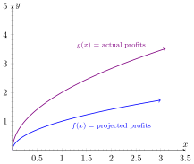

Mathematical notation is designed to be as precise and concise as possible.
There is a downside to this however, which is that anything that has been
studied in mathematics for a very long time like functions, tends to have
remarkably dense notation. This is the case for the notation which we discuss
here.
Recall that a function is really a relation with context; the domain and codomain. We
established in the last section that a function “takes in a point of the domain and
outputs a point in the codomain”. Trying to write this out for every function we want
to work with would get tiresome and clunky, not to mention it lacks precision (which
is one of our chief goals!) so we establish the notation as a shorthand for this (and
much more).
There are many ways to approach the notation and it can get very technical. For
this class (and through calculus) we restrict ourselves to the two most common ways
it is used.
Defining the relationship between the input and output.
The most common way to use notation is to define the relationship between the
input and output variable. This is what is being done when you see something like “”.
There are really three things being done here simultaneously.
a)
The first (and most obvious) is that we are giving the name of the function
that is relating the input and output variables; the in the .
b)
The second thing is that we are giving a name to a “dummy” input variable
(this is actually incredibly important as we’ll see soon), which in this case
is . This is the part of the .
c)
Lastly we are giving the relationship between the input (the ) and the
output by telling you how to transform the input into the correct output.
This is the part of the .
In this case it is important to notice that there is nothing special about the itself in
the expression ; it is just a dummy variable we are using because we need to use
something to represent the input. We could just as happily written or ; these are all
the same function because they are all the same relationship.
(we also assume
that all these have the same context, ie domain and codomain. In particular, the only
thing that changed is what letter we call the representative from the domain.)
This is easiest to understand if we consider a translation of the mathematical equality
in English. The function is (best) translated as “The function takes whatever input
you give it, squares that value, and then subtracts one from it.” Notice that I didn’t
need to give the input a name in the English version. This is because the specific
name “” didn’t matter, it was a placeholder name to represent “the input”, so I used
that phrase “the input” in the English translation instead of giving it a name like
“”.
Providing a naming scheme for the input and output.
The next most common way to see notation used, is to declare the names of the
independent and dependent variable. This is most commonly done with
an equality such as “”, but it is important to know that this is actually a
naming scheme. We are saying is a relation “taking in a point named ”
(thus we have named the independent variable “” here) and “it returns (or
maps to) a point named ” (thus we have named the dependent variable “”
here).
This is most often used in preparation of some kind of graphical representation of
your function. For example you would want to say that before you present an graph
of , otherwise the ”” value has no meaning in the graph. We often take this
assignment for granted, but we can use this method for more complicated graphs.
Consider figure profitProjections

Figure 1: As we see, the assignment for the output need not be a variable. The
shorthand for notation should only be used when it makes sense, and abandoned
when it makes more sense to do something else, like in this graph.
1 : What are the benefits to notation? (Select all that apply)
It is
much denser, saving a lot of time and space from writing out the words
in English.It is purely symbolic, so you can ignore the specifics of the
real world aspects it models.The notation provides the name and rule
simultaneously.It facilitates a lot of other mathematical mechanisms (eg
composition, algebra, and precision.)It’s how the notation has been defiend
for millenia, so it helps understand historical work to maintain the same
notation.
2 : What are the difficulties with notation? (Select all that apply)
The
notation is very dense, which makes it hard to read.The notation contains
everything you need, no more and no less.The notation is purely symbolic
which obfuscates the context of the situation being modeled.The notation
doesn’t include some necessary information like the relation between input and
output.
What’s Next?
The real strength of notation is that it allows us to figure out what happens when
we modify the input before the function even takes place. This is called function
composition, which is what we will cover in the next section!